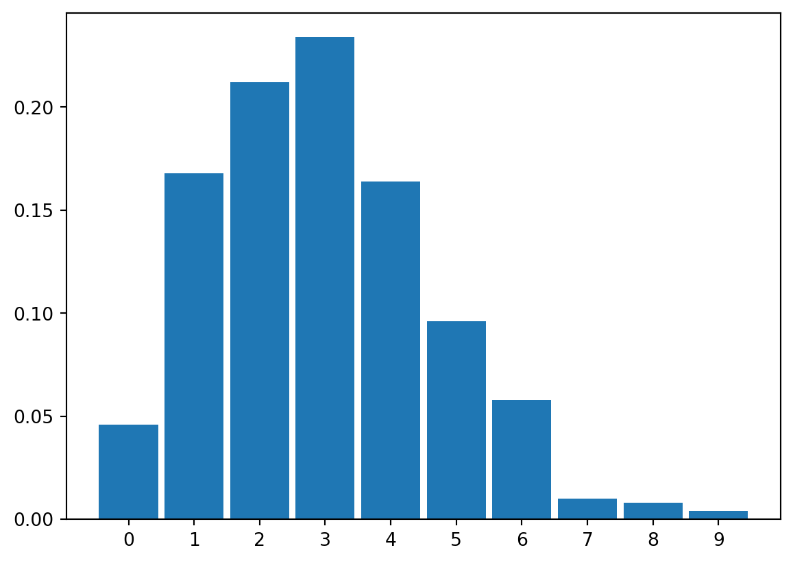
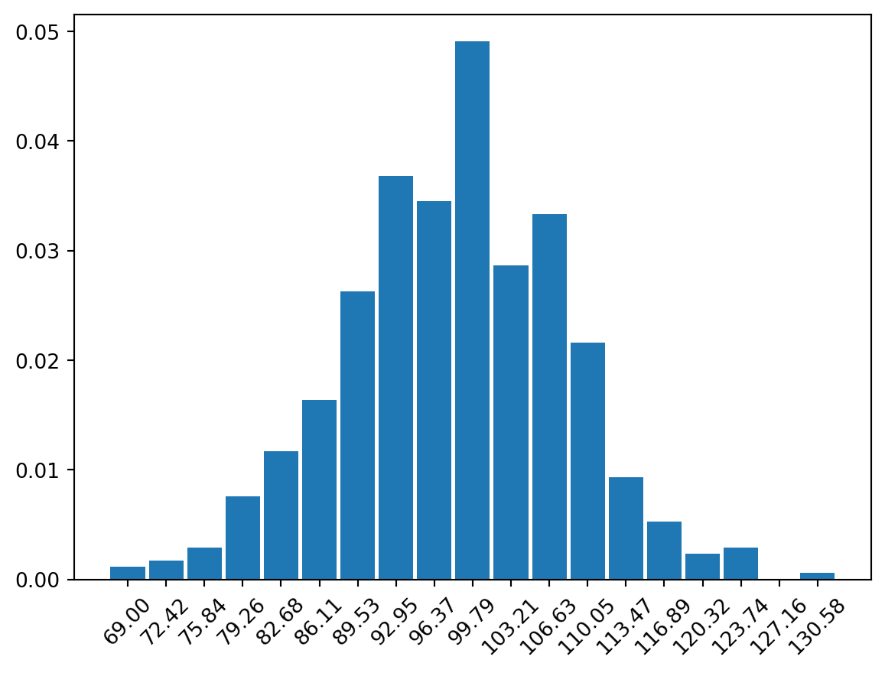
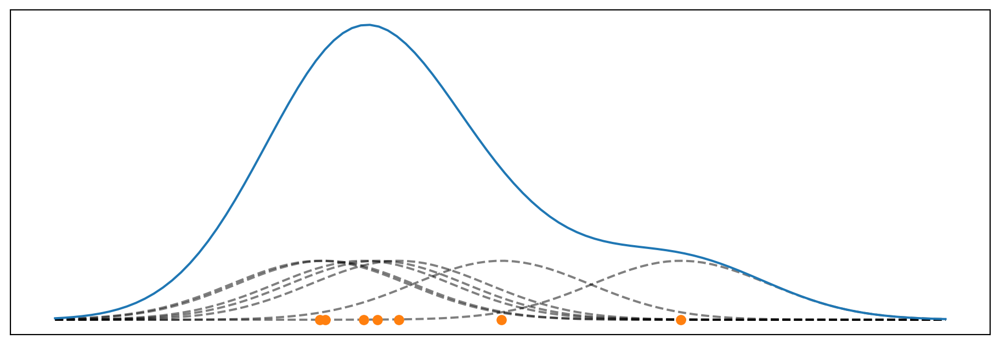

2 Distributions
A discrete distribution represents variables which can only take a countable number of values. Some examples of discrete random variables are the number of coins in your pocket, spots on a giraffe, red cars in a city and people with flu. As we generally use integers to represent discrete variables, when ArviZ is asked to plot integer data it will use histograms to represent them. ArviZ always tries to associate the discrete data to individuals bins. For example in the following plot each bar is associated with an integer in the interval [0, 9].
When the discrete values takes higher values, like in the following example, bins are still associated with integers but not every integer will be associated with a single different bins. Instead many integers will be binned together.
If you don’t like the default binning criteria of ArviZ, you can change it by passing the bins argument using the hist_kwargs.
d_values = pz.Poisson(100).rvs(500)
ax = az.plot_dist(d_values, hist_kwargs={"bins":"auto"})
plt.setp(ax.get_xticklabels(), rotation=45);
A continuous distribution represents variables taking an uncountable number of values. Some examples of continuous random variables are the temperature during summer, the blood pressure of a patience and the time needed to finish a task. By default ArviZ uses kernel density estimation (KDE) to represent continuous distributions.
Kernel density estimation (KDE) is a non-parametric way to estimate the probability density function of a random variable.
Conceptually you place a kernel function like a gaussian on top of a data-point, then you sum all the gaussians, generally evaluated over a grid and not over the data points. Results are normalized so the total area under the curve is one.
The following block of code shows a very simple example of a KDE.
_, ax = plt.subplots(figsize=(12, 4))
bw = 0.4
np.random.seed(19)
datapoints = 7
y = np.random.normal(7, size=datapoints)
x = np.linspace(y.min() - bw * 3, y.max() + bw * 3, 100)
kernels = np.transpose([pz.Normal(i, bw).pdf(x) for i in y])
kernels *= 1/datapoints # normalize the results
ax.plot(x, kernels, 'k--', alpha=0.5)
ax.plot(y, np.zeros(len(y)), 'C1o')
ax.plot(x, kernels.sum(1))
ax.set_xticks([])
ax.set_yticks([]);
Compared to other KDEs in the Python ecosystem, the KDE implemented in ArviZ automatically handles the boundaries of a distribution. Basically, ArviZ will assign a density of zero to any point outside the range of the data. Another nice feature of ArviZ’s KDE is the method it uses to estimate the bandwith. The bandwidth of a kernel density estimator is a parameter that controls its degree of smoothness. ArviZ’s method works well for a wide range of distributions including multimodal ones.